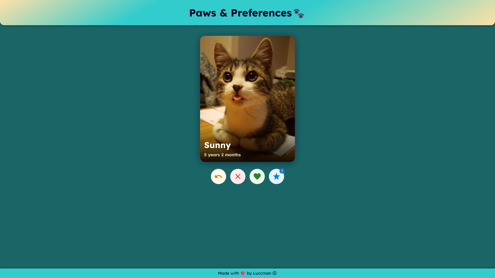
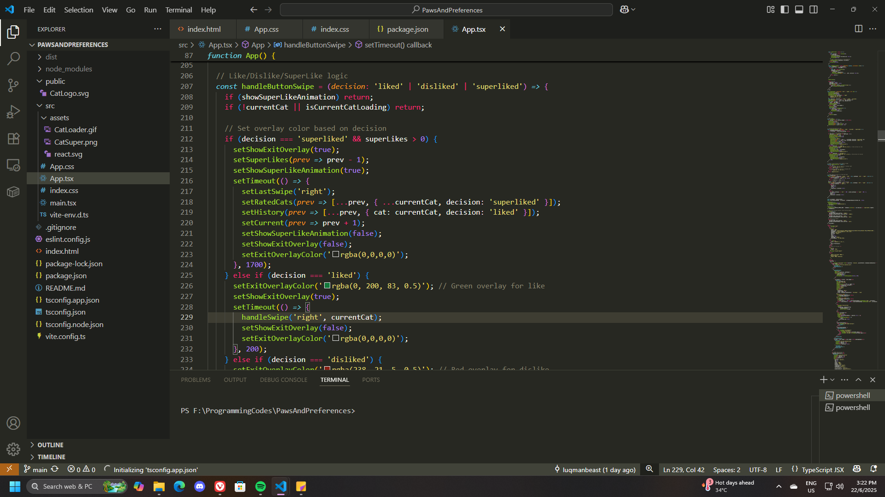
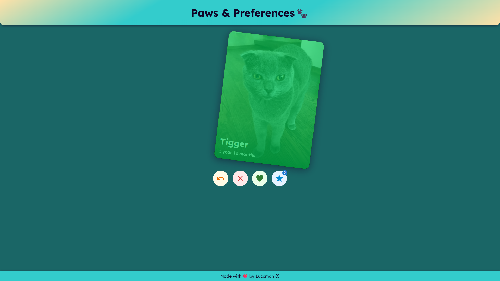
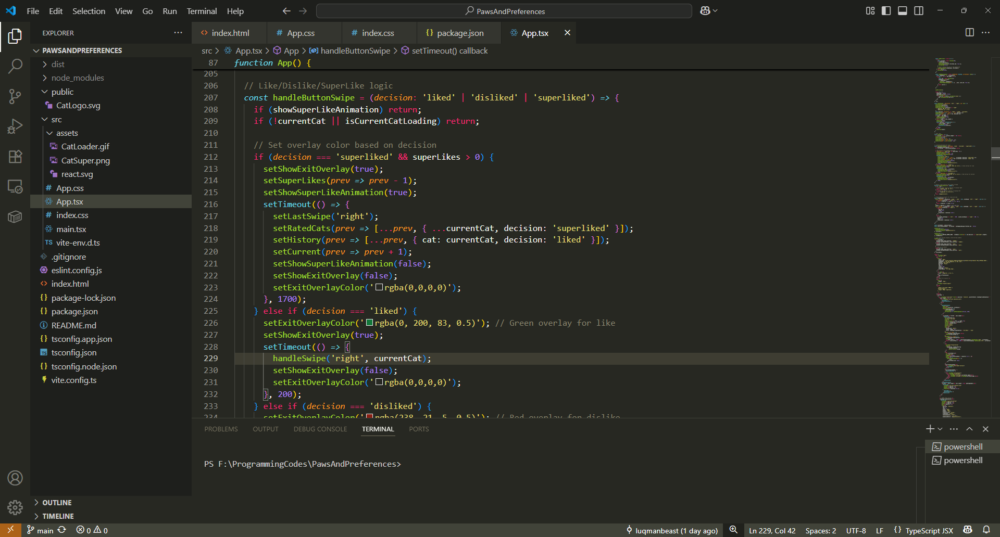
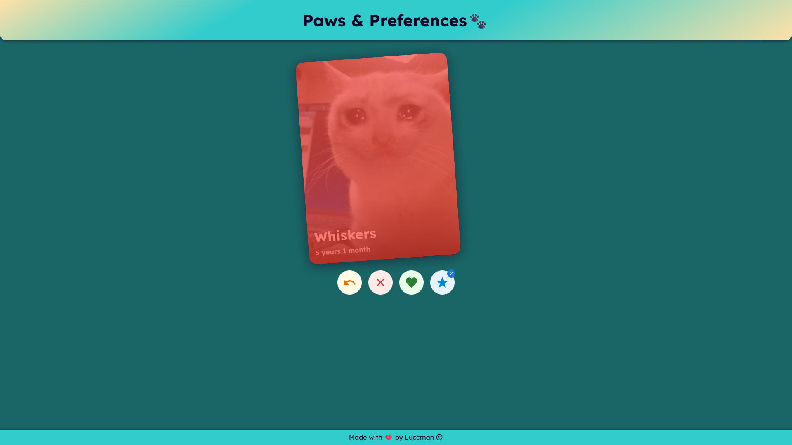
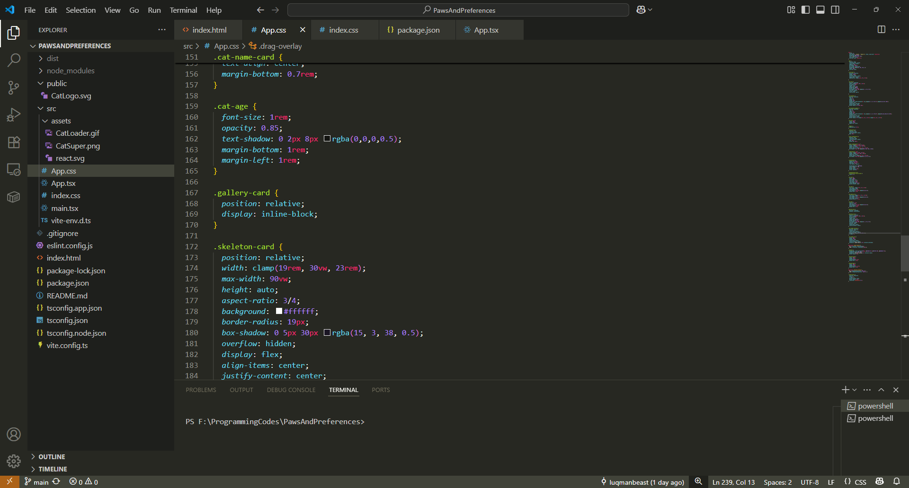
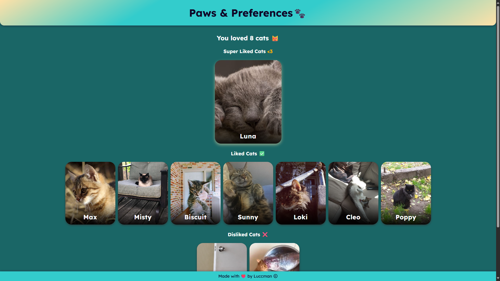
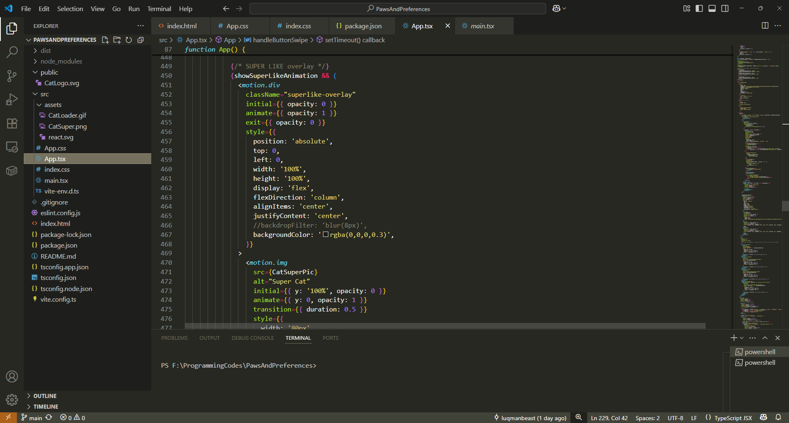

Overview
Paws & Preferences is a playful, swipe-based React app for rating cats, inspired by the
familiar "Tinder for pets" experience. Users can swipe through a stack of adorable cats, liking, disliking,
or even "super liking" their favorites. The app is built with React, TypeScript, Vite, Framer Motion, and
Material UI.
Features
- Swipeable Cards: Drag cards left or right to dislike or like cats, with smooth animations.
- Button Controls: Like, dislike, super like, and undo actions are available as buttons for
accessibility.
- Super Like: Limited-use "super like" for your absolute favorites, with a special animation.
- Undo: Go back and change your last decision.
- Summary Gallery: At the end, see a summary of all your liked, super liked, and disliked cats.
- Responsive Design: Works beautifully on desktop and mobile.
- Animated Feedback: Visual overlays and transitions for every interaction.
Technologies Used
- React (with hooks)
- TypeScript
- Vite
- Framer Motion
- Material UI
- Custom CSS
- Cataas API (for fetching random cat images)
How It Works
- Card Swiping & Dragging: Each cat is displayed as a card using a
<motion.div>
from Framer Motion. Drag left/right to dislike/like, with colored overlays (green/red) and smooth
transitions.
- Button Actions: Like, Dislike, Super Like (2 per session), and Undo are available as Material UI
buttons below the stack.
- Overlay Feedback: Dynamic overlays update in real time as you drag or use buttons.
- Card Animation: Cards animate in and out with scale, opacity, and position changes for a smooth
experience.
- Summary: After all cats are rated, a summary screen shows all your picks, with super liked cats
highlighted.
Project Structure
src/
├── App.tsx # Main app logic and UI
├── App.css # Custom styles
├──main.tsx # Entry point
├──index.css # Global styles
assets/ # Images (superLikeCat, loader, etc.)
public/
└──index.html # HTML template
Customization
- Card Count: Change
CAT_COUNT in App.tsx to adjust how many cats per session.
- Super Likes: Change
INITIAL_SUPER_LIKES for more or fewer super likes.
- Overlay Sensitivity: Adjust the max value in
getOverlayColor for how quickly the
overlay color appears.
Running Locally
- Install dependencies:
npm install
- Start the development server:
npm run dev
- Open http://localhost:5173 in your browser.
Credits
- Cat images from Cataas
- Built by Luccman